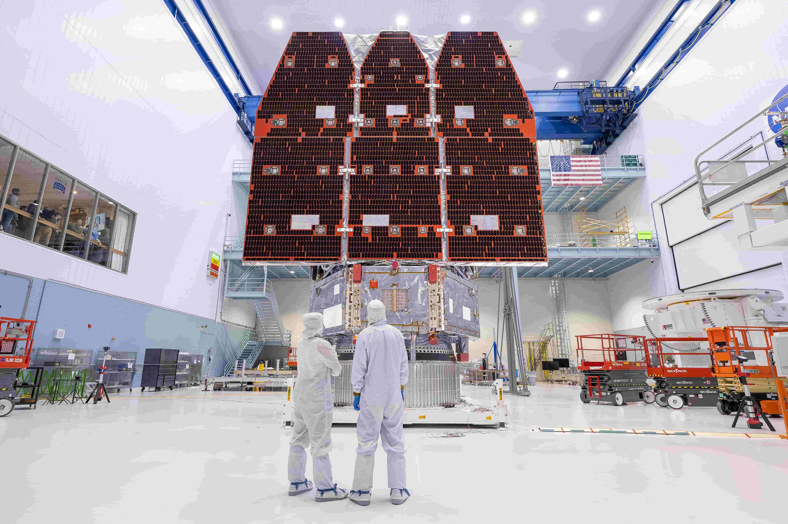
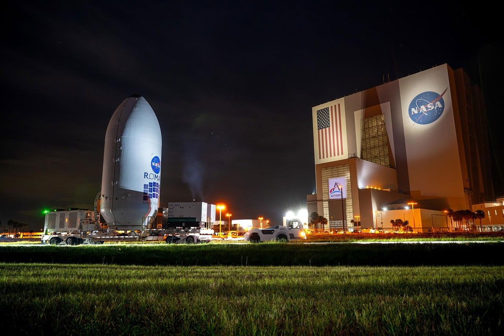

"There is not anything which returns to nothing, but all things return dissloved into their elements." — Lucretius, 50 BC
Nancy Grace Roman was NASA's first Chief of Astronomy — the first woman to hold an executive position at NASA. Driven by a passion for the stars from childhood, she obtained her docorate in astronomy from the university of Chicago in 1949, at a time when few women entered the science.
Roman was instrumental in planning the Hubble Space Telescope, earning her nickname "Mother of Hubble." Her vision and detemination opened doors for generations of astronomers. The telescope bearing her name will see further and wider than any observatory before it — a fiiting tribute to a remarkable woman.
Watch llive on NASA TV and SpaceX YouTube:
Coverage begins approximately 30 minutes before launch
Launch Date: Sunday 30 August 2026
The Nancy Grace Roman Space Telescope is NASA's next great observatory — named after Nancy Grace Roman, NASA's first Chief of Astronomy. With a field view 100 times larger than the Hubble Space Telescope, Roman will image billions of galaxies, discover thousands of exoplanets, and study the dark energy driving the universe's expansion.
Galaxies strecthing back to the early universe. Supernovae exploding across billions of light years. New planets orbiting distant stars. The large-scale structure of the comos itself — the web of matter shaped by forces we are only beginning to understand.
The universe is mostly invisible. Ordinary matter — everything we can see, touch and measure — makes up only about 5% of the universe. The remaining 95% is a mystery.
Dark matter — about 27% of the universe — is an invisible substance detectable only by how its gravity affects the things we can see. It acts as the scaffolding around which galaxies form and cluster
Dark energy — about 68% of the universe — is even more mysterious. It is the force driving the accelerating expansion of the universe itself. The further apart galaxies are, the faster they move away from each other — and dark energy is responsible.
Roman will map billions of galaxies across vast stretches of space and time, measuring how the universe has expanded and how matter has clustered — giving scientists the most detailed picture yet of those invisible forces shaping everything that exists
Roman will launch aboard a SpaceX Falcon Heavy — one of the most powerful operational rockets ever built. With 27 Merlin engines generating over 5 million pounds of thrust at liftoff, the Falcon Heavy can carry payloads of up to 64 tonnes to low Earth orbit.

Launch Complex 39A at Kennedy Space Center — the same pad that launched Apollo 11 to the moon — will send Roman on its journey to the second Lagrange point, 1.5 million kilometres from Earth.
Roman will travel to the second Largrange point — L2 — a special location in space 1.5 milliom kilometres from Earth, directly away from the Sun. At L2, the gravitational forces of the earth and Sun combine with the orbital motion to create a stable region where a spacecraft can remain with minimal fuel use.
L2 is ideal for space telescopes because the Earth, Moon and Sun are always in the same direction — behind the telescope — allowing Roman's sunshield to block all their light and heat simultaneously. This keeps the instrumnets at a stable, extremely cold tempurature, essential for detecting faint infrared light from distant galaxies
The James Webb Space telescope also orbits L2 — Roman will become its neighbour in deep space.
The Nancy Grace Roman Space Telescope lifted off sucessfully at 7:26am EDT aboard a SpaceX Falcon Heavy from Launch Complex 39A, Kennedy Space Center, Florida. Solar panels and lower instrument sun shade deployed sucessfully one hour and 23 minutes after launch. Roman is now on its three-month journey to L2, 1.5 million kilometres from Earth. NASA Administrator Jared Isaacman called it "exactly the kind of success story we want to see across NASA"
NASA comfirms Roman is on track for launch August 30 — eight months ahead of the orginal May 2027 schedule. The telescope is fully intergrated and ready at Kennedy Space Center, Launch Complex 39A.
Follow the launch live via NASA's coverage:
To be updated as events unfold...